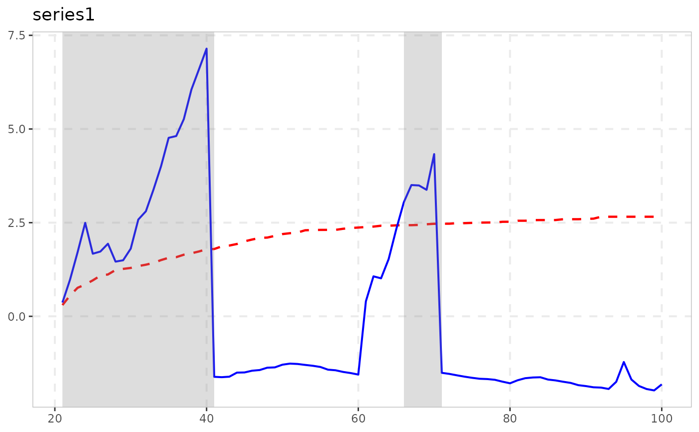

radf_common tests for a bubble common to a panel of series
(Chen, Phillips & Shi, 2023): it extracts the panel's first principal
component and runs the ordinary radf test on it – and
every downstream method (tidy(), autoplot(),
datestamp(), ...) works on it for free, since the output is an
ordinary radf_obj.
Arguments
- data
A univariate or multivariate numeric time series object, a numeric vector or matrix, or a data.frame. A column may have leading and/or trailing
NAvalues (an uneven/unbalanced panel where series enter or exit the sample at different times) – those periods are filled withNAinbadf/bsadfand excluded from that series'adf/sadf/gsadf. InteriorNAvalues (a gap in the middle of a series) are not supported. When any series is padded this way, the panel statistic (bsadf_panel/gsadf_panel) is not available and is returned asNA, with a warning.- minw
A positive integer. The minimum window size (default = \((0.01 + 1.8/\sqrt{T})T\), where T denotes the sample size).
- r
Number of principal components to extract (default 1, the paper's own recommendation: "sufficient... for the purpose of bubble identification"). Only the first is used for detection; the rest are returned for inspection via the
"prcomp"attribute.
Value
A radf_obj (see radf) computed on the panel's
first principal component, with the fitted prcomp object attached
as an attribute (attr(x, "prcomp")).
Details
The paper's own Theorem 4.3 claims the resulting statistic's null
limiting distribution is asymptotically identical to the standard
PSY/GSADF one, which would let radf_mc_cv apply directly.
An independent validation found this identity does not hold at
practical panel widths N: the true critical value is more than
double radf_mc_cv's at N = 100, and the gap grows
as N increases – PCA on a panel of merely independent
(non-cointegrated) I(1) series does not behave like a single random walk
once there are more series to draw transient co-movement from. Use
radf_common_cv for critical values, not
radf_mc_cv, which has no dependence on panel width and is
badly undersized here once N grows past a handful of series.
Note
Returns radf()'s own output (computed on the extracted
factor), and radf_common_cv() computes the full time-varying
boundary alongside the scalar critical values, so the full
summary()/datestamp/tidy/autoplot
pipeline works – see vignette("naming-and-analysis", package =
"exuber").
![[Experimental]](figures/lifecycle-experimental.svg)
References
Chen, Y., Phillips, P. C. B., & Shi, S. (2023). Common Bubble Detection in Large Dimensional Financial Systems. Journal of Financial Econometrics, 21(4), 989-1063.
See also
radf for the underlying (unmodified) test, and
radf_common_cv for its (panel-width-specific) critical
values.
Other multivariate:
cobubble_test(),
contagion_reg()
Examples
# \donttest{
# A panel of 5 series driven by one shared latent bubble factor
x <- sim_common(n_series = 5, n = 100, seed = 123)
res <- radf_common(x, minw = 20)
print(res)
#>
#> ── radf (minw = 20, lag = 0) ───────────────────────────────────────────────────
#>
#> id adf sadf gsadf
#> series1 -2.577 5.78 5.922
#>
#> gsadf_panel
#> 5.922
#>
# radf_common_cv() is needed here -- NOT radf_mc_cv(), see Details
cv <- radf_common_cv(n = 100, N = ncol(x), minw = 20)
summary(res, cv = cv)
#>
#> ── Summary (minw = 20, lag = 0) ────────────────── Monte Carlo (nboot = 1000) ──
#>
#> series1 :
#> # A tibble: 3 × 5
#> stat tstat `90` `95` `99`
#> <fct> <dbl> <dbl> <dbl> <dbl>
#> 1 adf -2.58 0.333 0.676 1.32
#> 2 sadf 5.78 1.86 2.12 2.71
#> 3 gsadf 5.92 2.26 2.55 3.22
#>
# The result is an ordinary radf_obj, so autoplot()/datestamp() work directly
autoplot(res, cv = cv)

datestamp(res, cv = cv)
#>
#> ── Datestamp (min_duration = 0) ───────────────────────────────── Monte Carlo ──
#>
#> series1 :
#> Start Peak End Duration Signal Ongoing
#> 1 46 55 56 10 positive FALSE
#>
# }